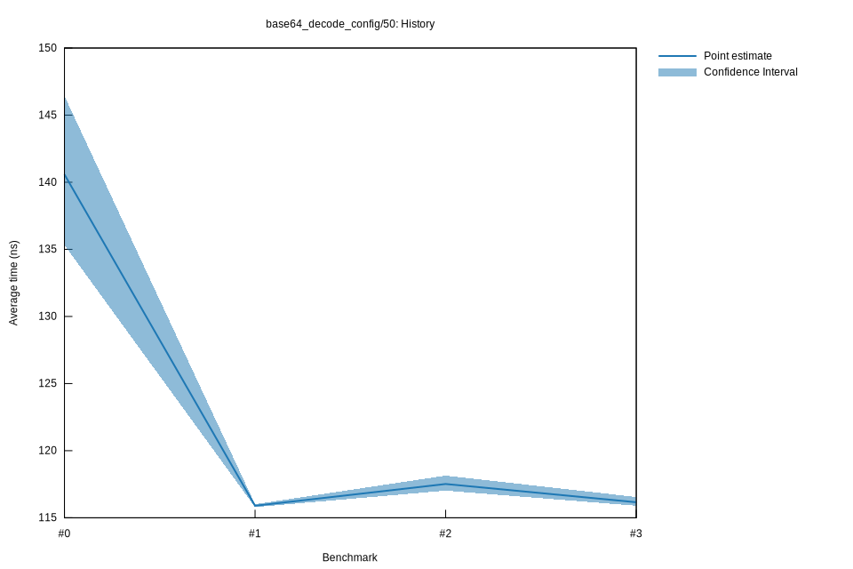

# 32022-10-15T17:18:58+03:00
|
Lower Bound |
Estimate |
Upper Bound |
| Value: |
115.90ns |
116.16ns |
116.55ns |
| Throughput: |
559.54MiB/s |
558.29MiB/s |
556.43MiB/s |
| Change in Value: |
-3.3765% |
-2.3671% |
-1.4748% |
| Change in Throughput: |
+3.4945% |
+2.4245% |
+1.4969% |
No change in performance detected.
# 22022-10-15T16:53:10+03:00
|
Lower Bound |
Estimate |
Upper Bound |
| Value: |
117.02ns |
117.52ns |
118.14ns |
| Throughput: |
554.16MiB/s |
551.83MiB/s |
548.91MiB/s |
| Change in Value: |
+1.6386% |
+2.5670% |
+3.5457% |
| Change in Throughput: |
-1.6122% |
-2.5028% |
-3.4243% |
No change in performance detected.
# 12022-10-08T17:29:57+03:00
|
Lower Bound |
Estimate |
Upper Bound |
| Value: |
115.80ns |
115.90ns |
116.01ns |
| Throughput: |
560.03MiB/s |
559.55MiB/s |
558.99MiB/s |
| Change in Value: |
-19.966% |
-16.772% |
-13.631% |
| Change in Throughput: |
+24.948% |
+20.152% |
+15.783% |
No change in performance detected.
# 02022-10-08T17:10:43+03:00
|
Lower Bound |
Estimate |
Upper Bound |
| Value: |
135.32ns |
140.58ns |
146.43ns |
| Throughput: |
479.24MiB/s |
461.30MiB/s |
442.88MiB/s |